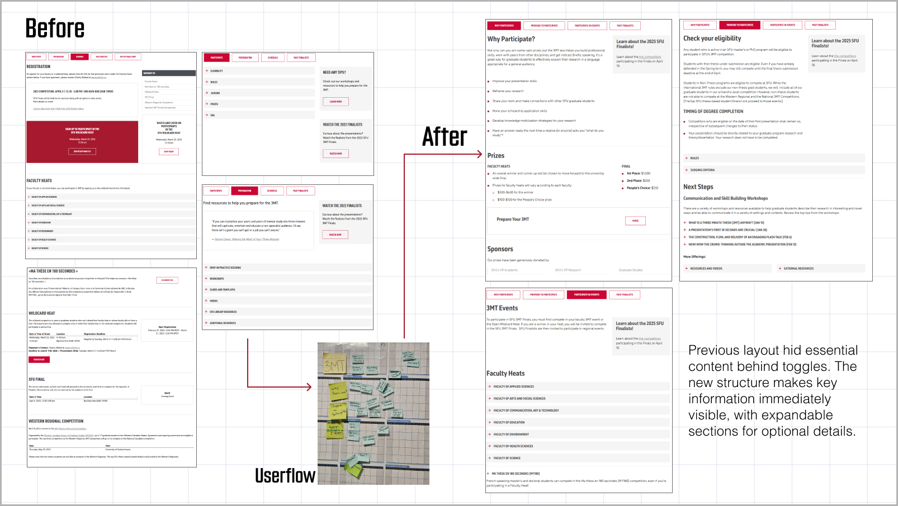
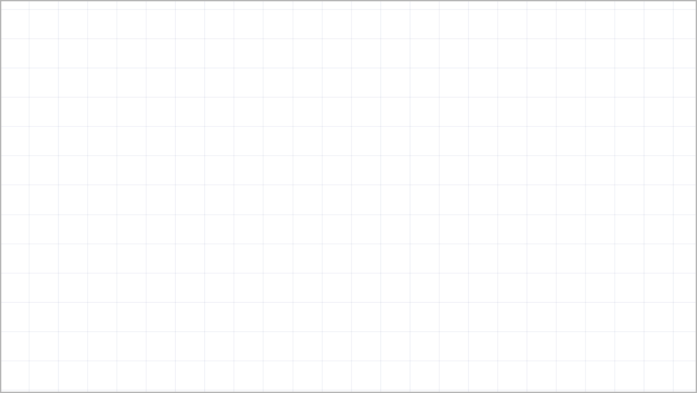

SFU Graduate Studies
Work • Aug 2023 - Aug 2024
Team: Communications, Marketing + Student Experience (CAPE)

0. Overview
From August 2023 to August 2024, I worked full-time as a Communication & Marketing Associate on the CAPE Team at SFU Graduate Studies. My responsibilities included managing the graduate website using Adobe Experience Manager (AEM), updating interactive documents, and creating visual materials for both print and digital. I also supported social media campaigns and cross-departmental initiatives that directly served the student community.
1. My Role
Title: Communication & Marketing Associate
Tools: AEM, Adobe InDesign, Photoshop, Illustrator, Premiere, Canva
I contributed as both a visual designer and a communication support, working on a wide range of materials that required close attention to clarity, brand consistency, and accessibility. I frequently collaborated with other faculty & students as email, and helped bridge the gap between visual presentation and web content strategy.
2. Design Decision
• Interactive Document Redesign
I transformed key administrative forms into digital, fillable PDFs using Adobe InDesign. This made the submission process more accessible for students and staff.
 Fig.1: Digitally fillable PDF forms created in InDesign for improved accessibility
Fig.1: Digitally fillable PDF forms created in InDesign for improved accessibility
• AEM Web Content Management
I updated and restructured over 50 web pages in AEM, particularly during the rebranding from “Graduate and Postdoctoral Studies” to “Graduate Studies.” This included full layout revisions for the Indigenous Graduate Students page and the 3MT (Three Minute Thesis) event page, improving readability and information flow.
 Fig.2: Revised layout of the Indigenous Graduate Students webpage with improved spacing and structure
Fig.2: Revised layout of the Indigenous Graduate Students webpage with improved spacing and structure
In-image text (Fig. 2):
• Long scroll layout was split into sections for better visibility on both desktop and mobile.

Fig.3: Original 3MT event page and updated version based on new user flow diagram
In-image text (Fig. 3):
Previous layout hid essential content behind toggles.
The new structure makes key information immediately visible, with expandable sections for optional details.
• Visual Content: Banners & Email
I designed promotional banners for award pages and landing banners for key content areas. I also updated the welcome email sent to over 1,000 new students, including custom artwork for each SFU campus and name of Indigenous territories.
 Fig.4: Banners and visuals for awards, Indigenous pages, and new student welcome communications
Fig.4: Banners and visuals for awards, Indigenous pages, and new student welcome communications
In-image text (Fig. 4):
• Webpage Banner: Original photos were taken or composited in Photoshop to create new banners.
• News Thumbnail: Edited thumbnails to ensure all award recipients were clearly visible.
• Welcome Email:
- Extended layout width for improved readability and added subtle dividers to separate content sections.
- The header image features key elements from SFU’s three campuses and acknowledges their respective Indigenous territories.
• Student Profile System Optimization
To streamline the process of publishing graduate student profiles, I updated an internal HTML-based tool and documented the workflow for future team members. While I can’t share visuals of the internal system, the updated tool enabled us to quickly generate over 100 student profile web pages.
During this process, I also proposed and designed a standardized photo background to improve visual consistency across profiles — as shown in the examples below.
 Fig.5: Original profile images versus newly standardized background design
Fig.5: Original profile images versus newly standardized background design
In-image text (Fig. 5):
• No Background needed: If the original photo was high enough in resolution, no background was added.
• Original Background: When the photo lacked size or clarity, a branded background was inserted to maintain layout consistency.The original background (e.g. cube image) did not align with brand aesthetics.
• New Background: A new background was proposed and finalized after several design iterations. The images on the right show the final version applied to multiple profiles.
• Video Editing
I edited a series of informational and promotional videos in Adobe Premiere, including:
– “How to Apply for a Graduate Program at SFU”, a 3-step tutorial
– Post-event recaps for the 2024 3MT competition
These videos were edited to align with SFU’s brand guidelines, including captioning and visual consistency.
 Fig.6: goGrad 3-step videos & 2024 3MT Finalists videos
Fig.6: goGrad 3-step videos & 2024 3MT Finalists videos
• Conference & Orientation Materials
I supported the Indigenous Initiatives team by redesigning a poster and conference program for an internal event. I also designed name tags and program brochures for Fall 2024 Orientation, attended by over 400 new students.

Fig.7: Conference poster + program layout
In-image text (Fig. 7):
Both materials were designed by me and maintained a cohesive tone aligned with the original visual direction.
• Volunteer Poster: Created in Canva to support fast iteration and real-time feedback from the Indigenous Initiatives team.
• Program Document: Designed in Adobe InDesign with a clean, readable layout that visually complements the poster.
 Fig.8: Orientation name tags and printed schedule brochure
Fig.8: Orientation name tags and printed schedule brochure
In-image text (Fig. 8):
• Name Tag: Name tags designed in Adobe InDesign for over 400 students and staff.
• Program Booklet for 2024 Orientation: Orientation schedule handout, folded for easy offline use. Based on the 2023 template.
3. Takeaway
Working at SFU Graduate Studies taught me how design operates within institutional systems — not just as a visual layer, but as a tool for clarity, accessibility, and communication. I learned to navigate university-wide brand guidelines, collaborate across departments, and work within complex platforms like AEM. Most importantly, I saw how small design decisions — whether in a form layout, a banner image, or a web page structure — can have a real impact on how students engage with information.